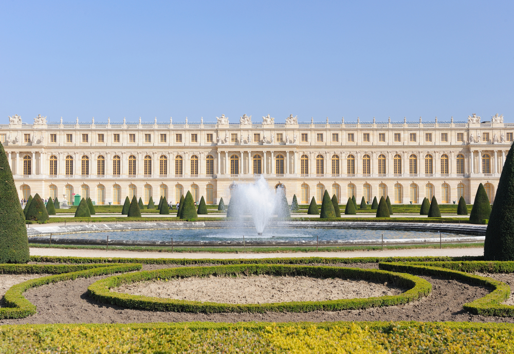

this dynasty unlike the other two, has been abolished and france is now is a republic. even though france has moved on politically, they still hold some beautiful palaces.
Perhaps one of the most well known palaces in europe, varsailles is a beutiful way to spend a day in France. It has incredible gardens and architecture that will blow you away. Sure it was owned by a greedy king, but hey, that was the past, we all make mistakes. You won't regret this amazing trip. So what are you waiting for?
